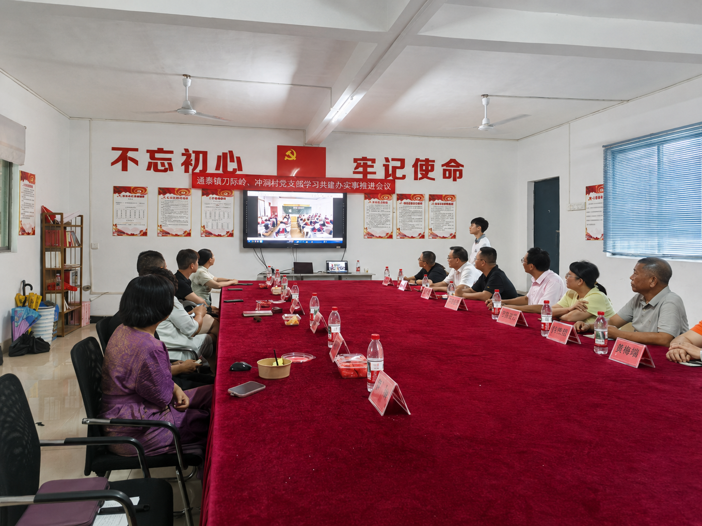
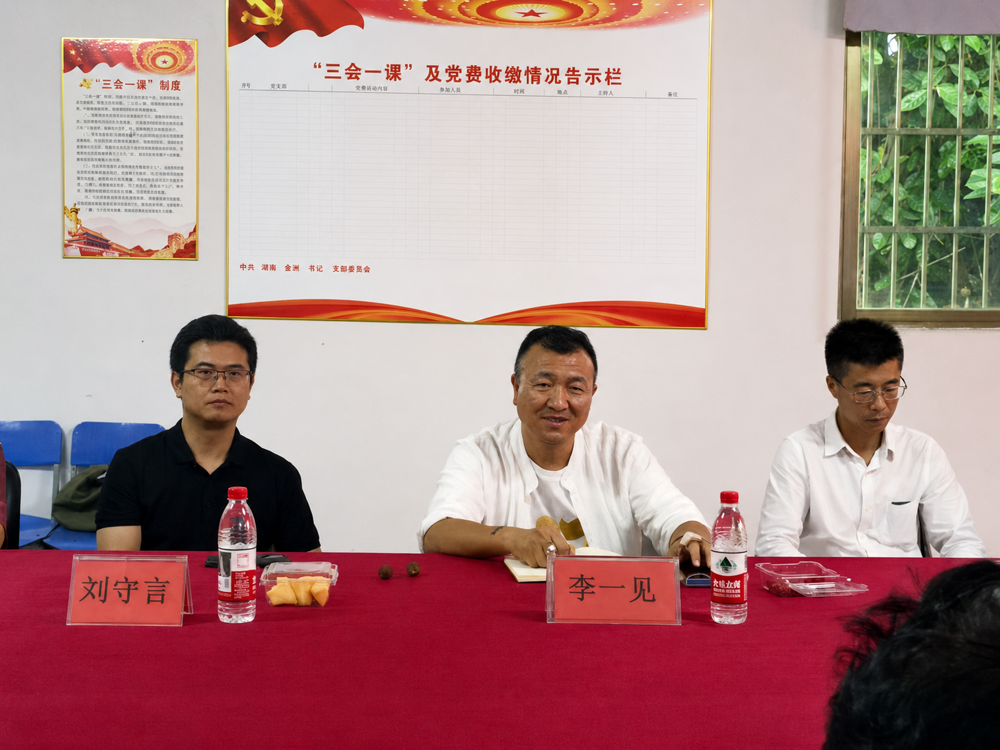

中科明心与北海市海城区博崇黄冈学校开展教育项目交流
2026年6月16日 北海
6月15日，中科明心（北海）智能科技有限公司与北海市海城区博崇黄冈学校举行教育项目交流座谈会。双方围绕人工智能辅助教学、学生学习能力培养、教师专业支持和家校协同等议题进行交流，并就课程研发、试点实施和师资协作等内容作了初步探讨。

图为教育项目交流座谈会现场。
座谈会上，中科明心团队介绍了公司教育项目的总体设想。该项目拟将人工智能工具、学习能力训练与中华优秀传统文化教育相结合，重点关注学生专注力、阅读理解、信息整理、表达输出和学习习惯等基础能力。项目介绍提出，人工智能在教学中的应用应以辅助教师、服务学生为出发点，注重与学校现有课程和教学管理相衔接。
博崇黄冈学校有关负责人介绍了学校教育教学、学生管理和课程建设等情况。与会人员认为，教育创新要从学生成长和一线教学的实际需求出发，既要关注新技术带来的教学方式变化，也要充分考虑课程适配、教师实施、家长沟通和效果评估等环节，避免简单追求形式和概念。

图为与会人员围绕课程设计和实施路径进行交流。
围绕后续工作，双方就建立项目工作机制、细化课程内容、开展教师培训、完善家校沟通以及建立阶段性评估机制等交换了意见。按照初步设想，相关项目将坚持小范围试点、分阶段评估、动态优化的原则，在充分论证和协商的基础上推进。具体实施内容、时间安排和合作方式，仍需双方进一步研究确定。
当前，人工智能正加快进入教育教学场景，知识获取方式和课堂组织形式不断发生变化。与会人员表示，技术应用的最终落点仍应是促进学生全面发展、提升教育教学质量。下一步，双方将继续围绕学生成长需求和学校办学实际深化沟通，在遵循教育规律、保障学生身心健康和数据安全的前提下，探索形成可实施、可评估、可持续的合作方案。
此次座谈增进了双方对教育项目定位和实施路径的了解，为后续开展务实合作奠定了基础。

图为座谈会结束后双方代表合影。